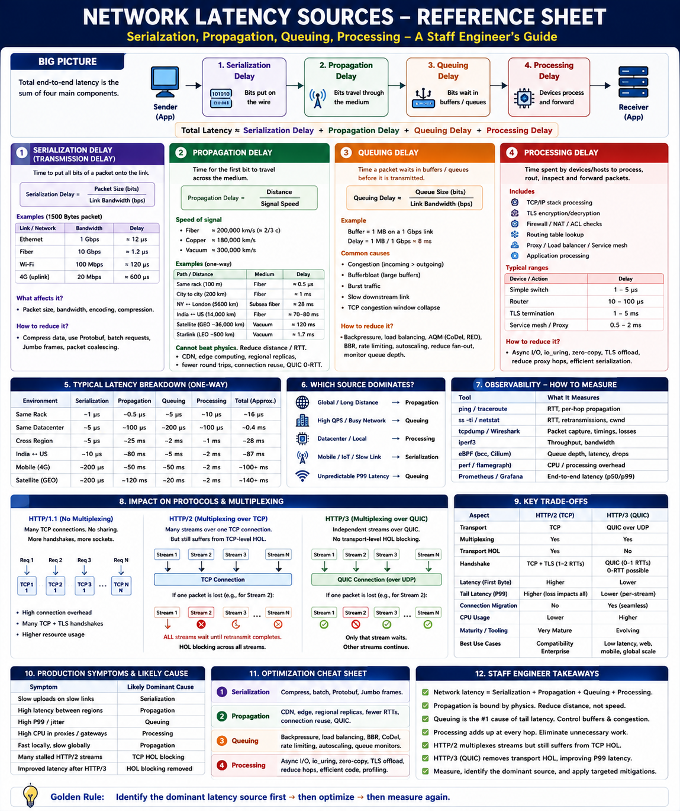

Serialization · Propagation · Queuing · Processing — where latency actually comes from
The Big Picture
When a request feels "slow," it is rarely one reason. Network latency is the sum of multiple delays as data travels from one machine to another. Total Latency = Serialization + Propagation + Queuing + Processing. Each component dominates in a different environment.
1 — Serialization Delay
Time to place every bit of a packet onto the wire (filling the pipe).
Reduce by:
Dominates on: mobile, IoT, large payloads, slow WAN links.
2 — Propagation Delay
Time for the first bit to physically travel across the medium. Limited by speed of light — cannot be eliminated.
Reduce by:
Dominates on: cross-region, global services.
3 — Queuing Delay
Time a packet waits in a buffer before being transmitted. The main cause of jitter and high P99 latency.
Reduce by:
Dominates on: high QPS backends, congested networks, mobile.
4 — Processing Delay
Time devices spend examining, routing, decrypting, and forwarding. Accumulates at every hop.
Reduce by:
Dominates on: same-rack, TLS-heavy, multi-proxy paths.
Typical Latency Breakdown by Environment
| Environment | Serialization | Propagation | Queuing | Processing | Total |
|---|---|---|---|---|---|
| Same Rack | ~1 µs | ~0.5 µs | <5 µs | ~10 µs | ~16 µs |
| Same Region | ~5 µs | ~100 µs | ~200 µs | ~100 µs | ~0.4 ms |
| Cross Region | ~5 µs | ~25 ms | ~2 ms | ~1 ms | ~28 ms |
| India ↔ US | ~10 µs | ~80 ms | ~5 ms | ~2 ms | ~87 ms |
| Mobile (4G) | ~200 µs | ~50 ms | ~50 ms | ~2 ms | ~100+ ms |
Which Delay Dominates?
| Environment | Dominant Source |
|---|---|
| Same Rack | Processing |
| Same Datacenter | Processing + Queuing |
| High QPS Backend | Queuing |
| Cross Region | Propagation |
| Global Services | Propagation |
| Mobile Networks | Propagation + Queuing |
| IoT Devices | Serialization |
Production Symptoms → Root Cause
| Symptom | Likely Source | Investigate |
|---|---|---|
| Slow upload speeds | Serialization | Payload size, encoding, bandwidth |
| Fast locally, slow globally | Propagation | ping / traceroute RTT |
| High P99 latency / jitter | Queuing | Queue depth, retransmits, bbr |
| CPU-bound gateway | Processing | TLS, proxy chain, perf profiling |
| TLS dominates response time | Processing | TLS offload, session reuse |
System Design Applications
| Design Problem | Dominant Source | Solution |
|---|---|---|
| Global Web App | Propagation | CDN + regional deployment |
| Microservices | Queuing | Backpressure + connection pooling |
| Video Streaming | Propagation + Queuing | Edge servers + QUIC |
| API Gateway | Processing | TLS offload + async I/O |
| IoT Ingestion | Serialization | Compression + batching |
| Cross-region DB | Propagation | Async replication + local reads |
Observability Tools
| Tool | Measures |
|---|---|
ping | RTT (propagation + processing) |
traceroute | Per-hop propagation delay |
tcpdump | Packet timings |
ss -ti | RTT, congestion window, socket state |
iperf3 | Throughput / bandwidth headroom |
perf | CPU processing cost |
| eBPF | Queue depth, socket latency, kernel paths |
| Prometheus + Grafana | End-to-end latency distributions (P50/P99/P999) |
Staff Engineer Thinking
Junior
The network is slow
Senior
P99 latency is high, check queuing
Staff asks
Key Takeaways
